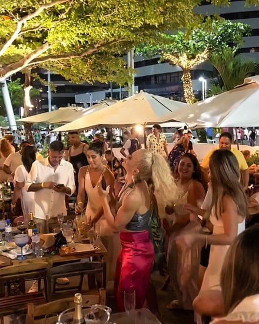
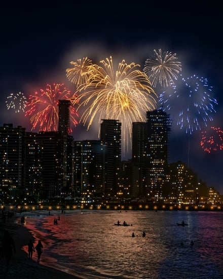

31 de dezembro · Beira-Mar de Fortaleza
Réveillon 2027 no Sir Fisher, de frente para o mar.
Quinta-feira, 31/12/2026, das 20h às 2h. DJ e cantor ao vivo, o cardápio da casa e os fogos de toda a orla à sua frente. Venda por mesa, com consumação inclusa.
A noite
O salão fica à beira da praia, na Av. Beira Mar, 3421, no Meireles, em frente ao Jardim Japonês. Uma escada desce direto para a areia.
À meia-noite, os fogos de toda a orla ficam à vista: a queima oficial do Aterro e as de vários clubes e hotéis da Beira-Mar. Antes e depois, DJ e cantor ao vivo até as 2h, com os peixes, camarões e petiscos do Sir Fisher servidos a noite toda.


As mesas e os valores
O valor é por mesa, não por pessoa, e já inclui um crédito de consumação para usar no cardápio durante a noite. Você escolhe o lugar exato no mapa do salão.
- Mesa lateral · junto à mureta, até 8 pessoas
- R$ 2.800
- Mesa central · no salão, até 4 pessoas
- R$ 1.500
- Bistrô · mesa alta para 2 pessoas
- R$ 800
- Cadeira extra · lateral ou central
- R$ 350
- Consumação inclusa: R$ 800 na lateral, R$ 400 na central, R$ 200 no bistrô e R$ 100 por cadeira extra.
- Em todas as mesas: 1 Chandon, welcome kit e brindes do patrocinador.
- Grupos grandes: a lateral recebe até 16 pessoas com cadeiras extras, e a central até 8. Para mais gente, reserve mesas vizinhas no mapa.
8% de desconto no Pix
A mesa fica garantida com o sinal de 30% em até 48 horas. O saldo pode ser pago até 20/12/2026. Valores do 1º lote.
Perguntas frequentes
Como faço o pagamento?
No Pix, com 8% de desconto, ou no cartão de débito ou crédito, presencialmente no restaurante ou na própria noite. Não enviamos link de pagamento. Sem o sinal em 48 horas, a pré-reserva expira e a mesa volta a ficar livre.
Posso levar crianças?
Sim. Crianças de colo não pagam e não contam para o mínimo da mesa. Crianças até 11 anos têm R$ 100 de desconto cada.
E se eu desistir?
O reembolso é integral se a desistência for comunicada por escrito em até 7 dias da contratação. Depois disso não há reembolso, mas você pode indicar outras pessoas para usar a mesa. Nenhum reembolso após 25/12/2026.
Posso levar bebida?
Só champanhe e espumante. Destilados pagam rolha de R$ 50 por garrafa, e não é permitido trazer alimentos. Fogos e pirotecnia são proibidos.
A consumação vale para outro dia?
Não. Ela vale só na noite do evento, sem devolução em dinheiro.
Onde fica
Sir Fisher Praia Av. Beira Mar, 3421 · MeirelesFortaleza, CE · em frente ao Jardim Japonês
- Data
- Quinta, 31/12/2026
- Horário
- 20h às 2h